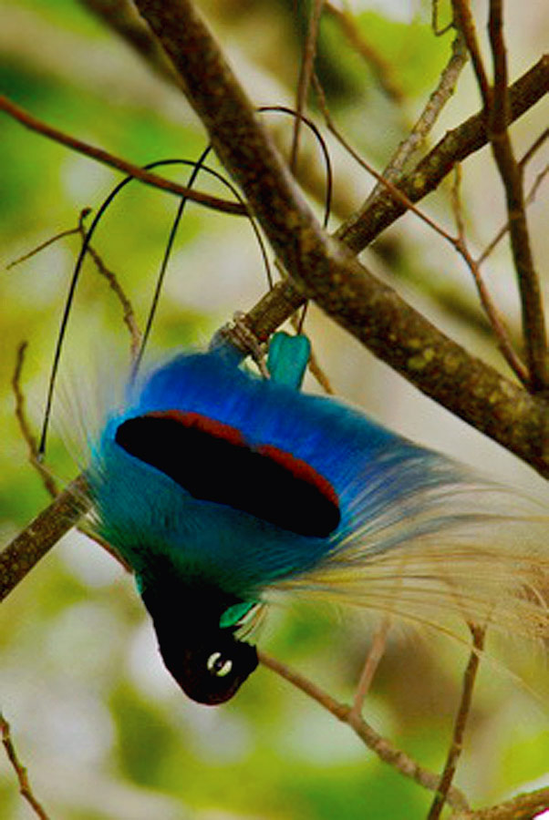
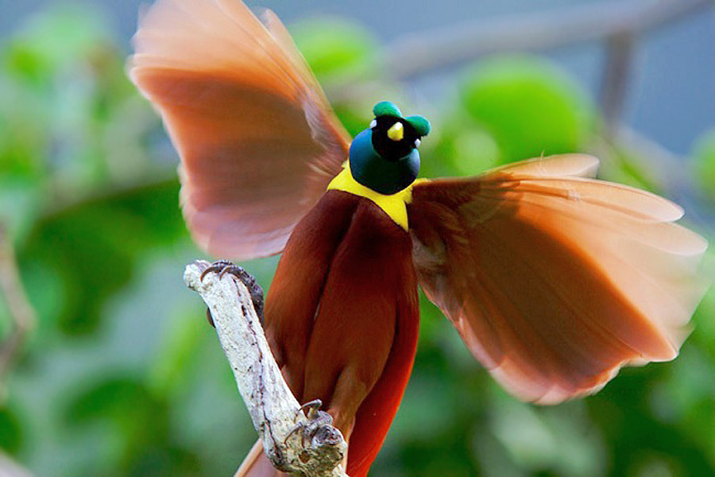

Deep in the misty mountains of Hela Province, perched on a ridge overlooking the Tari Valley, lies Ambua Lodge—arguably the finest bird watching destination in Papua New Guinea. Here, the world's most spectacular birds, the legendary Birds of Paradise, perform their ancient courtship dances against a backdrop of cascading waterfalls and pristine montane forest.
As a guide who has led countless birding expeditions to Ambua Lodge, I can tell you that this place is nothing short of magical. The dawn chorus, the flash of iridescent feathers, the haunting calls echoing through the valley—these are moments that stay with you forever. For bird watchers, wildlife photographers, and nature enthusiasts, Ambua Lodge represents the ultimate Papua New Guinea experience.
Bird Watching & Goroka Show 2026
September 10–18, 2026
Combine the ultimate birding experience at Ambua Lodge with the Goroka Show!
Ambua Lodge: A Sanctuary in the Clouds
Set at 2,100 meters above sea level, Ambua Lodge is Papua New Guinea's premier eco-lodge and the gateway to some of the world's most spectacular bird watching. Built in the traditional Huli style with modern comforts, the lodge offers unparalleled access to the montane forests of the Southern Highlands, home to an extraordinary diversity of bird species.
The lodge's location is no accident. The surrounding forests are part of the Tari Basin Important Bird Area, recognized globally for its exceptional bird life. More than 200 bird species have been recorded in the area, including 13 species of Birds of Paradise—the highest concentration of these legendary birds anywhere in Papua New Guinea.
What makes Ambua truly special is the quality of the birding experience. The lodge has developed an extensive network of trails through pristine forest, strategically placed viewing hides, and relationships with local landowners who understand the birds' habits intimately. Whether you're a seasoned birder with a life list spanning the globe or a curious traveler hoping to catch your first glimpse of a Bird of Paradise, Ambua delivers.
Birds of Paradise: Nature's Most Spectacular Dancers

The Birds of Paradise (Paradisaeidae) are the undisputed stars of Ambua. These extraordinary birds have evolved some of the most elaborate plumage and courtship behaviors in the animal kingdom, and nowhere are they more accessible than here.
Key Species to Look For:
- Ribbon-tailed Astrapia – One of the most spectacular Birds of Paradise, with tail feathers that can reach over three feet in length. Endemic to the highlands of Papua New Guinea, this species is regularly seen near Ambua.
- King of Saxony Bird of Paradise – Perhaps the most bizarre of all, with two long, wire-like head plumes that can be raised and lowered independently during display.
- Superb Bird of Paradise – Famous for its "smiley face" display, where the male transforms into a shape-shifting performance of iridescent feathers.
- Lawes's Parotia – Known locally as the "six-plumed bird of paradise," this species performs a ballet-like courtship dance on a cleared forest floor stage.
- Blue Bird of Paradise – A stunning species with brilliant blue plumage and long tail wires, found in the montane forests around Tari.
- Raggiana Bird of Paradise – Papua New Guinea's national bird, with spectacular red and gold plumage.
Other Notable Species:
- MacGregor's Bird of Paradise – A high-altitude specialist with striking orange and black plumage
- Princess Stephanie's Astrapia – One of the most sought-after birds in Papua New Guinea
- Belford's Melidectes – A striking honeyeater endemic to the highlands
- Mountain Kingfisher – A beautiful highland specialist
- Papuan Lorikeets – Colorful parrots that are often seen in flocks
The Bird Watching Experience
A typical day at Ambua Lodge begins before dawn. The predawn chorus is spectacular—the forest comes alive with the calls of Birds of Paradise preparing for their morning displays. After coffee at the lodge, you'll head out with your guide to one of the many viewing hides strategically positioned near active display sites.
The lodge's network of trails allows you to explore different habitats, from lower-elevation forest to subalpine grasslands. Elevations range from 1,800 to over 2,500 meters, providing access to distinct bird communities. The guides know exactly where to find each species and when they are most active.
Morning viewing sessions typically last 3-4 hours, followed by a hearty breakfast at the lodge. Afternoons can be spent exploring different trails, photographing birds at the lodge's well-positioned bird feeders, or relaxing on the deck overlooking the spectacular Tari Valley.
Combining Ambua Lodge with Goroka Show 2026
The Goroka Show in September offers a perfect opportunity to combine cultural immersion with world-class bird watching. The weather in September is typically stable across the highlands, making it an ideal time for both festivals and forest exploration.
Recommended Itinerary: Birding & Culture
- September 10: Arrive in Goroka, transfer to Ambua Lodge (flight to Tari)
- September 11-13: Bird watching at Ambua Lodge (three full days with expert guides)
- September 14: Huli cultural experience and village visit near Tari
- September 15: Return to Goroka, rest and preparation for festival
- September 16-17: Goroka Show (full festival experience)
- September 18: Asaro Valley extension (optional)
This itinerary offers the perfect balance: days spent in quiet contemplation of nature's most spectacular birds, followed by the vibrant celebration of Papua New Guinea's cultural diversity.
Planning Your Ambua Lodge Bird Watching Expedition
Best Time to Visit
The dry season (May through October) offers the most favorable conditions for bird watching. September is particularly ideal—the weather is stable, birds are active, and you can combine your visit with the Goroka Show. The breeding season for most Birds of Paradise occurs between July and December, so September offers excellent opportunities to witness courtship displays.
Getting There
Ambua Lodge is accessible via scheduled flights from Port Moresby and Goroka to Tari Airport. The flight offers spectacular views of the highlands. From Tari, it's a scenic 45-minute drive to the lodge. Our packages include all transfers and flight arrangements.
Accommodation
Ambua Lodge offers comfortable bungalow-style accommodation with stunning views of the Tari Valley. Each bungalow features en-suite facilities, hot water, and comfortable beds. The lodge's main building houses a restaurant serving excellent local and international cuisine, a bar, and a spacious deck perfect for relaxing between birding sessions.
What to Bring
- Binoculars – Essential for bird watching. If you don't have your own, we can arrange rentals
- Camera with telephoto lens – For capturing Birds of Paradise in their natural habitat
- Warm layers – The altitude (2,100m) means cool temperatures, especially in the early morning
- Waterproof jacket – Mountain weather can be unpredictable
- Sturdy walking shoes – Trails can be muddy, especially after rain
- Field guide – We recommend "Birds of New Guinea" by Pratt and Beehler
- Notebook – For keeping your bird list
- Headlamp – For early morning departures
Why Book Your Ambua Lodge Experience With Bismark Touris?
We are Papua New Guinea's leading birding tour specialists, with years of experience guiding visitors to Ambua Lodge. Our comprehensive packages include:
- Expert local bird guides – Our guides know the forest intimately and can identify birds by call, behavior, and preferred habitat
- Lodge accommodation – Comfortable rooms with spectacular valley views
- All meals – Delicious local and international cuisine
- Private vehicle transfers – Between Tari Airport and Ambua Lodge
- Flight arrangements – We book all domestic flights for your convenience
- Goroka Show combination packages – Seamless integration of birding and cultural experiences
- Photography guidance – Tips from guides who understand bird behavior and lighting conditions
Responsible Bird Watching
Ambua Lodge is a model of sustainable ecotourism. The lodge is owned and operated in partnership with local landowners, ensuring that tourism benefits the communities who protect these forests. When you visit, you're directly contributing to conservation efforts and providing economic alternatives to activities that would otherwise threaten bird habitat.
We practice strict ethical bird watching guidelines: maintaining respectful distances from display sites, limiting group sizes to minimize disturbance, and never using playback calls during the breeding season. These practices ensure that the birds of Ambua remain undisturbed for generations to come.
Frequently Asked Questions
What is the best time of day for bird watching?
The early morning hours (dawn until about 10:00 AM) are the most active period for bird watching. Birds of Paradise perform their courtship displays primarily in the morning. Late afternoon can also be productive.
Do I need to be an experienced birder to visit Ambua?
Not at all! Ambua welcomes everyone from first-time bird watchers to experienced ornithologists. Our guides are skilled at helping beginners spot and identify birds, and they'll tailor the experience to your interests and skill level.
What is the photography like at Ambua?
Ambua is considered one of the world's premier locations for bird photography. The viewing hides are positioned to provide excellent lighting and clear sightlines. Many of the world's most celebrated Bird of Paradise photographs have been taken here.
Can I combine Ambua with other destinations?
Absolutely. We offer combination packages that include the Goroka Show, Mount Wilhelm trekking, and other highlands destinations. The recommended itinerary above is just one example.
What is the cost of an Ambua Lodge bird watching package?
Prices vary based on group size, number of nights, and additional activities. A 4-night birding package at Ambua Lodge typically starts from PGK 2,800 per person (based on 2 people sharing). Contact us for a personalized quote including Goroka Show combinations.
Book Your Ambua Lodge & Goroka Show 2026 Adventure
Limited availability for September 2026. Early booking is essential to secure lodge accommodation and guide availability.
Phone: +675 76769513
WhatsApp: +675 76769513
Email: info@bismarktouris.com
Book by June 2026 to secure the best accommodation options and guide availability!
Iyope Auwao is a senior guide with Bismark Touris, specializing in bird watching tours and cultural experiences across Papua New Guinea. A passionate birder with over 400 species recorded in PNG, he has guided visitors at Ambua Lodge for more than a decade.